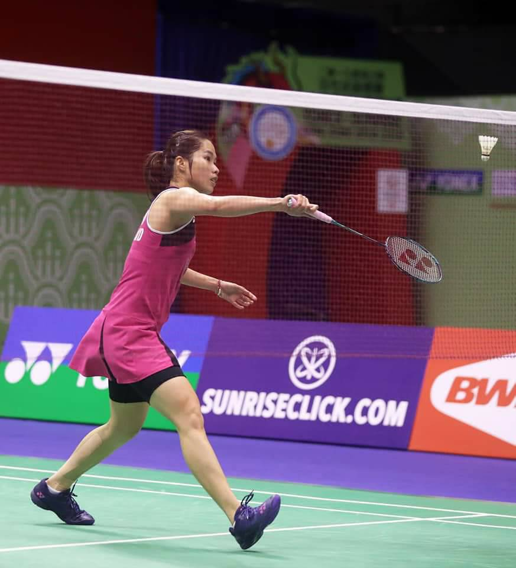
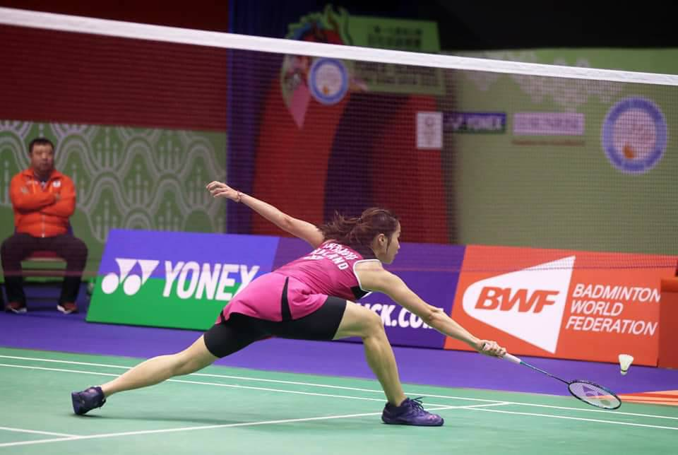
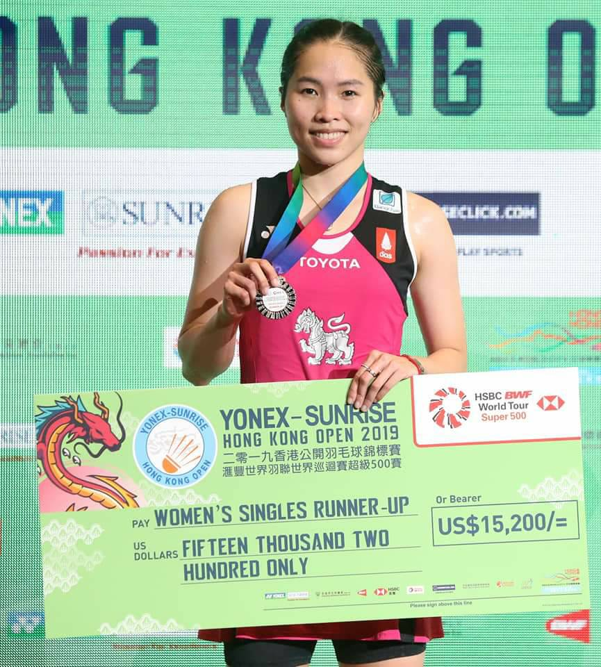

รัชนก อินทนนน์ นักแบดมินตันมือ 1 ไทยอกหักซ้ำที่ฮ่องกงหลังล่าสุดพ่าย เฉิน ยู่เฟย มืออันดับ 3 ของโลกจากจีน 1-2 เกมชวดแชมป์ "โยเน็กซ์ ซันไรส์ ฮ่องกง โอเพ่น" สองปีติดกัน
การแข่งขันแบดมินตันในศึก "โยเน็กซ์ ซันไรส์ ฮ่องกง โอเพ่น 2019" ทัวร์นาเมนต์ระดับเอชเอสบีซี บีดับบลิวเอฟ เวิลด์ทัวร์ 500 ชิงเงินรางวัลรวม 400,000 เหรียญสหรัฐ หรือประมาณ 12,080,000 บาท ที่เขตบริหารพิเศษฮ่องกงแห่ง สาธารณรัฐประชาชนจีน เมื่อวันอาทิตย์ที่ 17 พ.ย.62 เป็นการลงสนามแข่งขันวันที่หกในรอบชิงชนะเลิศ ซึ่งมีนักกีฬาแบดมินตันไทยทำผลงานเข้ามาถึงในรอบนี้ได้ในประเภทหญิงเดี่ยว
ประเภทหญิงเดี่ยว รอบชิงชนะเลิศ "เมย์" รัชนก อินทนนท์ มือวางอันดับ 5 ของรายการ มืออันดับ 5 ของโลก ลงสนามพบกับ เฉิน ยู่เฟย มือวางอันดับ 3 ของรายการ มืออันดับ 3 ของโลกจากจีน สำหรับสถิติในการพบกันระหว่าง รัชนก กับ เฉิน ยู่เฟย ก่อนหน้านี้เคยพบกันมาทั้งหมด 12 เป็นทาง เฉิน ยู่เฟย ที่ทำได้เหนือกว่าเก็บชัยชนะไปได้ 10 ครั้ง ล่าสุดในศึก ไชน่า โอเพ่น 2019 ในรอบ 8 คนสุดท้าย เมื่อสัปดาห์ที่ผ่านมา ทาง เฉิน ยู่เฟย เป็นฝ่ายเก็บชัยชนะมาได้ 2-0 เกม
เกมแรก เฉิน ยู่เฟยเริ่มต้นได้ดีกว่าขึ้นนำ 4-1 ต่อมาเฉิน ยู่เฟยยังคงคุมจังหวะเกมได้ดีต่อเนื่องขึ้นนำ 8-3 เมย์ รัชนกเริ่มตั้งเกมของตนเองได้ทำแต้มไล่ขึ้นมาเป็น 5-9 แล้วเป็นเฉิน ยู่เฟยที่ปิดครึ่งเกมแรกได้ที่ 11-6 เข้าครึ่งเกมหลังเป็นเฉิน ยู่เฟยที่คุมเกมได้ดีกว่าขึ้นนำ13-7 ต่อมาเมย์ รัชนก เริ่มเล่นในเกมของตัวเองมากขึ้นทำแต้มไล่ขึ้นมาเป็น 13-16 เข้าช่วงปลายเกมแรก เกมเริ่มที่สูสีมากขึ้นแต่เป็นเฉิน ยู่เฟยที่มาปิดเกมแรกได้ก่อนที่ 21-18 ขึ้นนำ 1-0 เกม
เกมสอง เมย์ รัชนกเริ่มต้นได้ดีกว่าขึ้นนำ 5-1 เมย์ รัชนกเล่นเกมบุกมากขึ้นทำแต้มขึ้นนำ 8-3 แล้วเมย์ รัชนกปิดครึ่งเกมที่สองได้ที่ 11-7 เข้าสู่ครึ่งเกมหลังเป็นเมย์ รัชนกที่เป็นฝ่ายครองเกมได้ต่อเนื่องขึ้นห่าง 17-9 เมย์ รัชนกคุมเป็นฝ่ายคุมเกมได่ตลอดขึ้นนำห่าง 19-11 แล้วเมย์ รัชนกมาปิดเกมที่สองได้ที่ 21-13 เสมอกัน 1-1 เกม
เกมตัดสิน เมย์ รัชนก เล่นเกมบุกตั้งแต่ต้นเกมขึ้นนำ 5-2 แต่เฉิน ยู่เฟยมาเร่งทำ 7 คะแนนรวดแซงขึ้นนำ 9-6 แล้วเฉิน ยู่เฟยปิดครึ่งที่สามที่ 11-6 เข้าสู่ครึ่งเกมหลังเป็นเฉิน ยู่เฟยคุมสถานการณ์เกมไว้ได้หมดขึ้นนำ 13-7 เข้าช่วงปลายเกมเฉิน ยู่เฟยเล่นลูกที่เฉียดขาดกว่าขึ้นนำ 19-13 แล้วเฉิน ยู่เฟยมาปิดเกมที่สามได้สำเร็จที่ 21-13
ใช้เวลาแข่งขัน 65 นาที เฉิน ยู่เฟย คว้าแชมป์ไปครองพร้อมรับเงินรางวัล 30,000 เหรียญสหรัฐ หรือประมาณ 900,000 บาท ส่วน เมย์ รัชนก รองแชมป์รับเงินรางวัล 15,200 เหรียญสหรัฐ หรือประมาณ 456,000 บาท
หลังการแข่งขัน คุณหญิงปัทมา ลีสวัสดิ์ตระกูล นายกสมาคมกีฬาแบดมินตันแห่งประเทศไทยฯ กล่าวว่า แม้เมย์จะแพ้อีกครั้งให้กับสาวจีนรายนี้ แต่ก็แสดงให้เห็นถึงความมุ่งมั่น แต่ด้วยปัจจัยหลายอย่าง และอาจมีอาการเหนื่อยล้าจากรอบรองฯ ที่ต้องเล่นถึง 3 เกมจนไม่สามารถเร่งเกมได้ดีขึ้น ประกอบกับ เฉิน อู้เฟย อยู่ในฟอร์มที่ร้อนแรง เข้าชิงฯ 6 รายการในปีนี้ และคว้าแชมป์ได้ทั้งหมด แต่อย่างไรก็ดี เมย์ก็ยังถือว่ารักษามาตรฐานการเล่นได้อย่างคงเส้นคงวา เข้าชิงฯ 6 รายการ และคว้าแชมป์มาได้ 2 รายการ ซึ่งทั้งหมดเป็นระดับซูเปอร์ 500 จึงนับว่าเป็นปีที่ดีสุดในรอบกว่า 10 ปี ตั้งแต่ออกแข่งขันอาชีพ และยังมีคะแนน "เวิลด์ ทัวร์ ไฟนอลส์" เป็นอันดับ 2 ของโลกอีกด้วย ซึ่งนับว่ายอดเยี่ยมมาก และเชื่อว่าเมย์จะรักษาผลงานเช่นนี้ต่อไปได้เรื่อยๆ จึงอยากให้ชาวไทยเป็นกำลังใจให้เมย์ และนักแบดมินตันไทยกันต่อไป
"เมย์ รักษามาตรฐานการเล่นของตัวเองได้เป็นอย่างดีในปีนี้ เพราะโตขึ้นมาก และมีความเป็นมืออาชีพ รวมถึงมุ่งมั่นฝึกซ้อมเช่นเดียวกับนักแบดมินตันไทยทุกคน ที่หวังจะทำผลงานให้ดี อย่าง "ครีม"บุศนันทน์ อึ๊งบำรุงพันธุ์ มือ 18 ของโลก ที่ได้สิทธิ์ลงเล่น "เวิลด์ ทัวร์ ไฟนอลส์" เป็นครั้งแรกของตัวเอง และเป็นครั้งแรกในประวัติศาสตร์วงการแบดมินตันไทยที่มีนักแบดมินตันไทย 2 คนลงแข่งขันประเภทเดียวกันในรายการนี้ รวมถึง หญิงคู่ "กิ๊ฟ"จงกลพรรณ กิติธรากุล-"วิว"รวินดา ประจงใจ คู่มือ 9 ของโลก ที่แม้ผลงานไม่โดดเด่น แต่ก็เข้ารอบลึก และคว้าแชมป์ได้ 1 รายการ และรองแชมป์อีก 1 รายการ รวมถึง คู่ผสม "บาส"เดชาพล พัววรานุเคราะห์-"ปอป้อ"ทรัพย์สิรี แต้รัตนชัย คู่มือ 4 ของโลก ที่ผลงานดีตลอดทั้งปี เช่นเดียวกัน" คุณหญิงปัทมา กล่าว